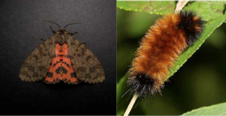

| Home |
| COLACASIA |
MAJOR PESTS |
| 1. Flea beetle |
| 2. Hairy caterpillar |
| 3. Sphinx caterpillar |
| 4. Sphinx caterpillar |
| 5. Aphid |
MINOR PESTS |
| 1. Thrips |
| 2. Grasshopper |
| 3. Tingid |
| 4. Horned caterpillar |
| Questions |
| Download Notes |
TUBER VEGETABLES :: MAJOR PESTS:: HAIRY CATERPILLAR
Hairy caterpillar: Pericallia ricini (Arctiidae:Lepidioptera)
Distribution and status: Sporadic pest
Host range: Castor, green manure, moringa
Damage symptoms
The damage is caused by caterpillar. It feeds on leaves resulting in defoliation. Larvae nocturnal and feed voraciously at night.
Bionomics
The larva is robust, greyish black or blackish brown larva with red head and thick tuft of hairs arising from the body. The adult is greyish brown or black colour and black spots on wings. Hind wings are pink or red colour with black spots.
|  |
Pericallia ricini |
Management
Spray endosulfan 35 EC or malathion 50 EC 1.0 L or carbaryl 1.0 kg in 500 L per ha